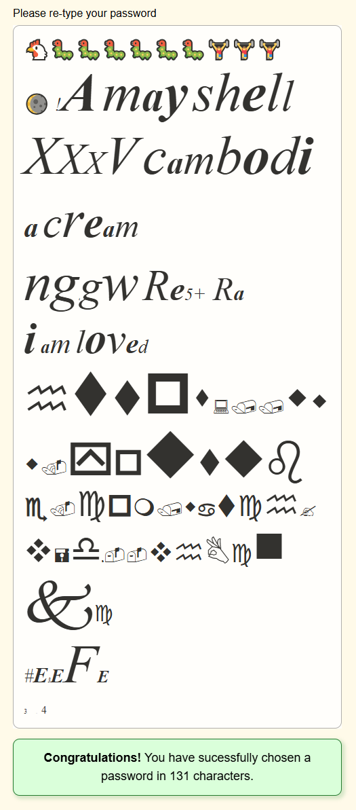

- HTML
- CSS
- JavaScript
유튜브
HTML이란?
Hypertext markup Language (HTML)
is the standard markup language for
creating web pages and web applications,web .....
정보
코드 상에서 줄바꿈을 해도 웹 페이지에는 그것이 반영되지 않는다. 웹 페이지에도 줄바꿈을 해주려면 특정 태그를 입력해야 한다.
은 줄바꿈을 해주는 기능이 있으며 닫는 태그가 필요 없다. 태그는 단락을 만들어주는 기능이 있다.
단락을 구분해준다는 맥락에서 볼 때는 태그를 쓰는 것이 더 좋다. 왜냐하면 코드만 보고서도 어디부터 어디까지가 한 단락인지도 알 수 있기 때문이다.
